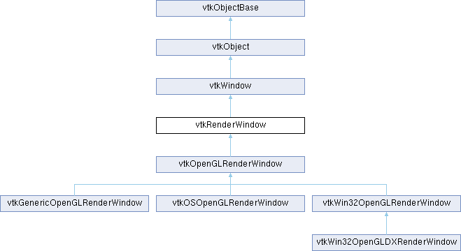

|
Etrek
|
|
Etrek
|
create a window for renderers to draw into More...
#include <vtkRenderWindow.h>

Public Types | |
| enum | { PhysicalToWorldMatrixModified = vtkCommand::UserEvent + 200 } |
Public Member Functions | |
| vtkTypeMacro (vtkRenderWindow, vtkWindow) | |
| void | PrintSelf (ostream &os, vtkIndent indent) override |
| virtual void | AddRenderer (vtkRenderer *) |
| void | RemoveRenderer (vtkRenderer *) |
| vtkTypeBool | HasRenderer (vtkRenderer *) |
| virtual const char * | GetRenderingBackend () |
| vtkGetNewMacro (RenderTimer, vtkRenderTimerLog) | |
| vtkRendererCollection * | GetRenderers () |
| void | CaptureGL2PSSpecialProps (vtkCollection *specialProps) |
| void | Render () override |
| virtual void | Start () |
| virtual void | End () |
| virtual void | Initialize () |
| virtual void | Finalize () |
| virtual void | Frame () |
| virtual void | WaitForCompletion () |
| virtual void | CopyResultFrame () |
| virtual vtkRenderWindowInteractor * | MakeRenderWindowInteractor () |
| virtual void | StereoUpdate () |
| virtual void | StereoMidpoint () |
| virtual void | StereoRenderComplete () |
| virtual void | WindowRemap () |
| virtual vtkTypeBool | GetEventPending () |
| virtual int | CheckInRenderStatus () |
| virtual void | ClearInRenderStatus () |
| virtual void | SetInteractor (vtkRenderWindowInteractor *) |
| void | UnRegister (vtkObjectBase *o) override |
| virtual bool | InitializeFromCurrentContext () |
| virtual bool | IsCurrent () |
| virtual void | SetForceMakeCurrent () |
| virtual const char * | ReportCapabilities () |
| virtual int | SupportsOpenGL () |
| virtual vtkTypeBool | IsDirect () |
| virtual int | GetDepthBufferSize () |
| virtual int | GetColorBufferSizes (int *) |
| virtual int | GetNumberOfDevices () |
| virtual void | SetPhysicalToWorldMatrix (vtkMatrix4x4 *matrix) |
| virtual void | GetPhysicalToWorldMatrix (vtkMatrix4x4 *matrix) |
| virtual bool | GetDeviceToWorldMatrixForDevice (vtkEventDataDevice device, vtkMatrix4x4 *deviceToWorldMatrix) |
| vtkGetMacro (CapturingGL2PSSpecialProps, int) | |
| vtkGetMacro (Initialized, bool) | |
| virtual void | HideCursor () |
| virtual void | ShowCursor () |
| virtual void | SetCursorPosition (int, int) |
| vtkSetMacro (CurrentCursor, int) | |
| vtkGetMacro (CurrentCursor, int) | |
| vtkSetFilePathMacro (CursorFileName) | |
| vtkGetFilePathMacro (CursorFileName) | |
| virtual void | SetFullScreen (vtkTypeBool) |
| vtkGetMacro (FullScreen, vtkTypeBool) | |
| vtkBooleanMacro (FullScreen, vtkTypeBool) | |
| vtkSetMacro (Borders, vtkTypeBool) | |
| vtkGetMacro (Borders, vtkTypeBool) | |
| vtkBooleanMacro (Borders, vtkTypeBool) | |
| vtkGetMacro (Coverable, vtkTypeBool) | |
| vtkBooleanMacro (Coverable, vtkTypeBool) | |
| virtual void | SetCoverable (vtkTypeBool coverable) |
| vtkGetMacro (StereoCapableWindow, vtkTypeBool) | |
| vtkBooleanMacro (StereoCapableWindow, vtkTypeBool) | |
| virtual void | SetStereoCapableWindow (vtkTypeBool capable) |
| vtkGetMacro (StereoType, int) | |
| void | SetStereoType (int) |
| void | SetStereoTypeToCrystalEyes () |
| void | SetStereoTypeToRedBlue () |
| void | SetStereoTypeToInterlaced () |
| void | SetStereoTypeToLeft () |
| void | SetStereoTypeToRight () |
| void | SetStereoTypeToDresden () |
| void | SetStereoTypeToAnaglyph () |
| void | SetStereoTypeToCheckerboard () |
| void | SetStereoTypeToSplitViewportHorizontal () |
| void | SetStereoTypeToFake () |
| void | SetStereoTypeToEmulate () |
| vtkGetMacro (StereoRender, vtkTypeBool) | |
| void | SetStereoRender (vtkTypeBool stereo) |
| vtkBooleanMacro (StereoRender, vtkTypeBool) | |
| vtkSetMacro (AlphaBitPlanes, vtkTypeBool) | |
| vtkGetMacro (AlphaBitPlanes, vtkTypeBool) | |
| vtkBooleanMacro (AlphaBitPlanes, vtkTypeBool) | |
| vtkSetMacro (PointSmoothing, vtkTypeBool) | |
| vtkGetMacro (PointSmoothing, vtkTypeBool) | |
| vtkBooleanMacro (PointSmoothing, vtkTypeBool) | |
| vtkSetMacro (LineSmoothing, vtkTypeBool) | |
| vtkGetMacro (LineSmoothing, vtkTypeBool) | |
| vtkBooleanMacro (LineSmoothing, vtkTypeBool) | |
| vtkSetMacro (PolygonSmoothing, vtkTypeBool) | |
| vtkGetMacro (PolygonSmoothing, vtkTypeBool) | |
| vtkBooleanMacro (PolygonSmoothing, vtkTypeBool) | |
| vtkSetClampMacro (AnaglyphColorSaturation, float, 0.0f, 1.0f) | |
| vtkGetMacro (AnaglyphColorSaturation, float) | |
| vtkSetVector2Macro (AnaglyphColorMask, int) | |
| vtkGetVectorMacro (AnaglyphColorMask, int, 2) | |
| vtkSetMacro (SwapBuffers, vtkTypeBool) | |
| vtkGetMacro (SwapBuffers, vtkTypeBool) | |
| vtkBooleanMacro (SwapBuffers, vtkTypeBool) | |
| virtual int | SetPixelData (int, int, int, int, unsigned char *, int, int=0) |
| virtual int | SetPixelData (int, int, int, int, vtkUnsignedCharArray *, int, int=0) |
| virtual float * | GetRGBAPixelData (int, int, int, int, int, int=0) |
| virtual int | GetRGBAPixelData (int, int, int, int, int, vtkFloatArray *, int=0) |
| virtual int | SetRGBAPixelData (int, int, int, int, float *, int, int=0, int=0) |
| virtual int | SetRGBAPixelData (int, int, int, int, vtkFloatArray *, int, int=0, int=0) |
| virtual void | ReleaseRGBAPixelData (float *) |
| virtual unsigned char * | GetRGBACharPixelData (int, int, int, int, int, int=0) |
| virtual int | GetRGBACharPixelData (int, int, int, int, int, vtkUnsignedCharArray *, int=0) |
| virtual int | SetRGBACharPixelData (int, int, int, int, unsigned char *, int, int=0, int=0) |
| virtual int | SetRGBACharPixelData (int, int, int, int, vtkUnsignedCharArray *, int, int=0, int=0) |
| virtual float * | GetZbufferData (int, int, int, int) |
| virtual int | GetZbufferData (int, int, int, int, float *) |
| virtual int | GetZbufferData (int, int, int, int, vtkFloatArray *) |
| virtual int | SetZbufferData (int, int, int, int, float *) |
| virtual int | SetZbufferData (int, int, int, int, vtkFloatArray *) |
| float | GetZbufferDataAtPoint (int x, int y) |
| vtkGetMacro (NeverRendered, int) | |
| vtkGetMacro (AbortRender, int) | |
| vtkSetMacro (AbortRender, int) | |
| vtkGetMacro (InAbortCheck, int) | |
| vtkSetMacro (InAbortCheck, int) | |
| virtual int | CheckAbortStatus () |
| virtual void | SetDesiredUpdateRate (double) |
| vtkGetMacro (DesiredUpdateRate, double) | |
| vtkGetMacro (NumberOfLayers, int) | |
| vtkSetClampMacro (NumberOfLayers, int, 1, VTK_INT_MAX) | |
| vtkGetObjectMacro (Interactor, vtkRenderWindowInteractor) | |
| void | SetDisplayId (void *) override |
| void | SetWindowId (void *) override |
| virtual void | SetNextWindowId (void *) |
| void | SetParentId (void *) override |
| void * | GetGenericDisplayId () override |
| void * | GetGenericWindowId () override |
| void * | GetGenericParentId () override |
| void * | GetGenericContext () override |
| void * | GetGenericDrawable () override |
| void | SetWindowInfo (const char *) override |
| virtual void | SetNextWindowInfo (const char *) |
| void | SetParentInfo (const char *) override |
| virtual void | SetSharedRenderWindow (vtkRenderWindow *) |
| vtkGetObjectMacro (SharedRenderWindow, vtkRenderWindow) | |
| virtual bool | GetPlatformSupportsRenderWindowSharing () |
| virtual void | SetMultiSamples (int) |
| vtkGetMacro (MultiSamples, int) | |
| vtkSetMacro (StencilCapable, vtkTypeBool) | |
| vtkGetMacro (StencilCapable, vtkTypeBool) | |
| vtkBooleanMacro (StencilCapable, vtkTypeBool) | |
| vtkSetMacro (DeviceIndex, int) | |
| vtkGetMacro (DeviceIndex, int) | |
| vtkGetMacro (UseSRGBColorSpace, bool) | |
| vtkSetMacro (UseSRGBColorSpace, bool) | |
| vtkBooleanMacro (UseSRGBColorSpace, bool) | |
| virtual void | SetPhysicalViewDirection (double, double, double) |
| virtual void | SetPhysicalViewDirection (double[3]) |
| vtkGetVector3Macro (PhysicalViewDirection, double) | |
| virtual void | SetPhysicalViewUp (double, double, double) |
| virtual void | SetPhysicalViewUp (double[3]) |
| vtkGetVector3Macro (PhysicalViewUp, double) | |
| virtual void | SetPhysicalTranslation (double, double, double) |
| virtual void | SetPhysicalTranslation (double[3]) |
| vtkGetVector3Macro (PhysicalTranslation, double) | |
| virtual void | SetPhysicalScale (double) |
| vtkGetMacro (PhysicalScale, double) | |
| vtkGetMacro (EnableTranslucentSurface, bool) | |
| vtkSetMacro (EnableTranslucentSurface, bool) | |
| vtkBooleanMacro (EnableTranslucentSurface, bool) | |
| Public Member Functions inherited from vtkWindow | |
| vtkTypeMacro (vtkWindow, vtkObject) | |
| void | PrintSelf (ostream &os, vtkIndent indent) override |
| int * | GetActualSize () VTK_SIZEHINT(2) |
| virtual int * | GetScreenSize () VTK_SIZEHINT(2) |
| virtual void | SetIcon (vtkImageData *) |
| virtual void | ReleaseGraphicsResources (vtkWindow *) |
| virtual bool | DetectDPI () |
| vtkTypeBool | GetOffScreenRendering () |
| virtual void | MakeCurrent () |
| virtual void | ReleaseCurrent () |
| virtual bool | EnsureDisplay () |
| virtual int * | GetPosition () VTK_SIZEHINT(2) |
| virtual void | SetPosition (int x, int y) |
| virtual void | SetPosition (int a[2]) |
| virtual int * | GetSize () VTK_SIZEHINT(2) |
| virtual void | SetSize (int width, int height) |
| virtual void | SetSize (int a[2]) |
| vtkGetMacro (Mapped, vtkTypeBool) | |
| vtkGetMacro (ShowWindow, bool) | |
| vtkSetMacro (ShowWindow, bool) | |
| vtkBooleanMacro (ShowWindow, bool) | |
| vtkSetMacro (UseOffScreenBuffers, bool) | |
| vtkGetMacro (UseOffScreenBuffers, bool) | |
| vtkBooleanMacro (UseOffScreenBuffers, bool) | |
| vtkSetMacro (Erase, vtkTypeBool) | |
| vtkGetMacro (Erase, vtkTypeBool) | |
| vtkBooleanMacro (Erase, vtkTypeBool) | |
| vtkSetMacro (DoubleBuffer, vtkTypeBool) | |
| vtkGetMacro (DoubleBuffer, vtkTypeBool) | |
| vtkBooleanMacro (DoubleBuffer, vtkTypeBool) | |
| vtkGetStringMacro (WindowName) | |
| vtkSetStringMacro (WindowName) | |
| virtual unsigned char * | GetPixelData (int, int, int, int, int, int=0) |
| virtual int | GetPixelData (int, int, int, int, int, vtkUnsignedCharArray *, int=0) |
| vtkGetMacro (DPI, int) | |
| vtkSetClampMacro (DPI, int, 1, VTK_INT_MAX) | |
| void | SetOffScreenRendering (vtkTypeBool val) |
| vtkBooleanMacro (OffScreenRendering, vtkTypeBool) | |
| vtkSetVector2Macro (TileScale, int) | |
| vtkGetVector2Macro (TileScale, int) | |
| void | SetTileScale (int s) |
| vtkSetVector4Macro (TileViewport, double) | |
| vtkGetVector4Macro (TileViewport, double) | |
| Public Member Functions inherited from vtkObject | |
| vtkBaseTypeMacro (vtkObject, vtkObjectBase) | |
| virtual void | DebugOn () |
| virtual void | DebugOff () |
| bool | GetDebug () |
| void | SetDebug (bool debugFlag) |
| virtual void | Modified () |
| virtual vtkMTimeType | GetMTime () |
| void | RemoveObserver (unsigned long tag) |
| void | RemoveObservers (unsigned long event) |
| void | RemoveObservers (const char *event) |
| void | RemoveAllObservers () |
| vtkTypeBool | HasObserver (unsigned long event) |
| vtkTypeBool | HasObserver (const char *event) |
| vtkTypeBool | InvokeEvent (unsigned long event) |
| vtkTypeBool | InvokeEvent (const char *event) |
| std::string | GetObjectDescription () const override |
| unsigned long | AddObserver (unsigned long event, vtkCommand *, float priority=0.0f) |
| unsigned long | AddObserver (const char *event, vtkCommand *, float priority=0.0f) |
| vtkCommand * | GetCommand (unsigned long tag) |
| void | RemoveObserver (vtkCommand *) |
| void | RemoveObservers (unsigned long event, vtkCommand *) |
| void | RemoveObservers (const char *event, vtkCommand *) |
| vtkTypeBool | HasObserver (unsigned long event, vtkCommand *) |
| vtkTypeBool | HasObserver (const char *event, vtkCommand *) |
| template<class U, class T> | |
| unsigned long | AddObserver (unsigned long event, U observer, void(T::*callback)(), float priority=0.0f) |
| template<class U, class T> | |
| unsigned long | AddObserver (unsigned long event, U observer, void(T::*callback)(vtkObject *, unsigned long, void *), float priority=0.0f) |
| template<class U, class T> | |
| unsigned long | AddObserver (unsigned long event, U observer, bool(T::*callback)(vtkObject *, unsigned long, void *), float priority=0.0f) |
| vtkTypeBool | InvokeEvent (unsigned long event, void *callData) |
| vtkTypeBool | InvokeEvent (const char *event, void *callData) |
| virtual void | SetObjectName (const std::string &objectName) |
| virtual std::string | GetObjectName () const |
| Public Member Functions inherited from vtkObjectBase | |
| const char * | GetClassName () const |
| virtual vtkTypeBool | IsA (const char *name) |
| virtual vtkIdType | GetNumberOfGenerationsFromBase (const char *name) |
| virtual void | Delete () |
| virtual void | FastDelete () |
| void | InitializeObjectBase () |
| void | Print (ostream &os) |
| void | Register (vtkObjectBase *o) |
| int | GetReferenceCount () |
| void | SetReferenceCount (int) |
| bool | GetIsInMemkind () const |
| virtual void | PrintHeader (ostream &os, vtkIndent indent) |
| virtual void | PrintTrailer (ostream &os, vtkIndent indent) |
| virtual bool | UsesGarbageCollector () const |
Static Public Member Functions | |
| static vtkRenderWindow * | New () |
| static const char * | GetRenderLibrary () |
| Static Public Member Functions inherited from vtkObject | |
| static vtkObject * | New () |
| static void | BreakOnError () |
| static void | SetGlobalWarningDisplay (vtkTypeBool val) |
| static void | GlobalWarningDisplayOn () |
| static void | GlobalWarningDisplayOff () |
| static vtkTypeBool | GetGlobalWarningDisplay () |
| Static Public Member Functions inherited from vtkObjectBase | |
| static vtkTypeBool | IsTypeOf (const char *name) |
| static vtkIdType | GetNumberOfGenerationsFromBaseType (const char *name) |
| static vtkObjectBase * | New () |
| static void | SetMemkindDirectory (const char *directoryname) |
| static bool | GetUsingMemkind () |
Protected Member Functions | |
| virtual void | DoStereoRender () |
| Protected Member Functions inherited from vtkObject | |
| void | RegisterInternal (vtkObjectBase *, vtkTypeBool check) override |
| void | UnRegisterInternal (vtkObjectBase *, vtkTypeBool check) override |
| void | InternalGrabFocus (vtkCommand *mouseEvents, vtkCommand *keypressEvents=nullptr) |
| void | InternalReleaseFocus () |
| Protected Member Functions inherited from vtkObjectBase | |
| virtual void | ReportReferences (vtkGarbageCollector *) |
| vtkObjectBase (const vtkObjectBase &) | |
| void | operator= (const vtkObjectBase &) |
Protected Attributes | |
| vtkRendererCollection * | Renderers |
| vtkNew< vtkRenderTimerLog > | RenderTimer |
| vtkTypeBool | Borders |
| vtkTypeBool | Coverable |
| vtkTypeBool | FullScreen |
| int | OldScreen [5] |
| vtkTypeBool | PointSmoothing |
| vtkTypeBool | LineSmoothing |
| vtkTypeBool | PolygonSmoothing |
| vtkTypeBool | StereoRender |
| int | StereoType |
| vtkTypeBool | StereoCapableWindow |
| vtkTypeBool | AlphaBitPlanes |
| vtkRenderWindowInteractor * | Interactor |
| vtkSmartPointer< vtkUnsignedCharArray > | StereoBuffer |
| vtkSmartPointer< vtkUnsignedCharArray > | ResultFrame |
| vtkTypeBool | SwapBuffers |
| double | DesiredUpdateRate |
| int | AbortRender |
| int | InAbortCheck |
| int | InRender |
| int | NeverRendered |
| int | NumberOfLayers |
| int | CurrentCursor |
| float | AnaglyphColorSaturation |
| int | AnaglyphColorMask [2] |
| int | MultiSamples |
| vtkTypeBool | StencilCapable |
| int | CapturingGL2PSSpecialProps |
| int | DeviceIndex |
| bool | UseSRGBColorSpace |
| char * | CursorFileName |
| double | AbortCheckTime |
| vtkRenderWindow * | SharedRenderWindow |
| double | PhysicalViewDirection [3] = { 0.0, 0.0, -1.0 } |
| double | PhysicalViewUp [3] = { 0.0, 1.0, 0.0 } |
| double | PhysicalTranslation [3] = { 0.0, 0.0, 0.0 } |
| double | PhysicalScale = 1.0 |
| bool | EnableTranslucentSurface = false |
| bool | Initialized = false |
| Protected Attributes inherited from vtkWindow | |
| char * | WindowName |
| int | Size [2] |
| int | Position [2] |
| vtkTypeBool | Mapped |
| bool | ShowWindow |
| bool | UseOffScreenBuffers |
| vtkTypeBool | Erase |
| vtkTypeBool | DoubleBuffer |
| int | DPI |
| double | TileViewport [4] |
| int | TileSize [2] |
| int | TileScale [2] |
| Protected Attributes inherited from vtkObject | |
| bool | Debug |
| vtkTimeStamp | MTime |
| vtkSubjectHelper * | SubjectHelper |
| std::string | ObjectName |
| Protected Attributes inherited from vtkObjectBase | |
| std::atomic< int32_t > | ReferenceCount |
| vtkWeakPointerBase ** | WeakPointers |
| const char * | GetStereoTypeAsString () |
| static const char * | GetStereoTypeAsString (int type) |
Additional Inherited Members | |
| Static Protected Member Functions inherited from vtkObjectBase | |
| static vtkMallocingFunction | GetCurrentMallocFunction () |
| static vtkReallocingFunction | GetCurrentReallocFunction () |
| static vtkFreeingFunction | GetCurrentFreeFunction () |
| static vtkFreeingFunction | GetAlternateFreeFunction () |
create a window for renderers to draw into
vtkRenderWindow is an abstract object to specify the behavior of a rendering window. A rendering window is a window in a graphical user interface where renderers draw their images. Methods are provided to synchronize the rendering process, set window size, and control double buffering. The window also allows rendering in stereo. The interlaced render stereo type is for output to a VRex stereo projector. All of the odd horizontal lines are from the left eye, and the even lines are from the right eye. The user has to make the render window aligned with the VRex projector, or the eye will be swapped.
|
virtual |
Add a renderer to the list of renderers.
| void vtkRenderWindow::CaptureGL2PSSpecialProps | ( | vtkCollection * | specialProps | ) |
The GL2PS exporter must handle certain props in a special way (e.g. text). This method performs a render and captures all "GL2PS-special" props in the specified collection. The collection will contain a vtkPropCollection for each vtkRenderer in this->GetRenderers(), each containing the special props rendered by the corresponding renderer.
|
inlinevirtual |
Are we rendering at the moment
|
inlinevirtual |
Clear status (after an exception was thrown for example)
|
virtual |
Performed at the end of the rendering process to generate image. This is typically done right before swapping buffers.
|
inlinevirtual |
Update the system, if needed, at end of render process
Reimplemented in vtkOpenGLRenderWindow.
|
inlinevirtual |
Finalize the rendering process.
Reimplemented in vtkGenericOpenGLRenderWindow, vtkOSOpenGLRenderWindow, and vtkWin32OpenGLRenderWindow.
|
inlinevirtual |
A termination method performed at the end of the rendering process to do things like swapping buffers (if necessary) or similar actions.
Reimplemented in vtkGenericOpenGLRenderWindow, vtkOpenGLRenderWindow, vtkOSOpenGLRenderWindow, and vtkWin32OpenGLRenderWindow.
|
inlinevirtual |
Get the size of the color buffer. Returns 0 if not able to determine otherwise sets R G B and A into buffer.
Reimplemented in vtkOpenGLRenderWindow.
|
inlinevirtual |
This method should be defined by the subclass. How many bits of precision are there in the zbuffer?
Reimplemented in vtkOpenGLRenderWindow.
|
virtual |
Store in deviceToWorldMatrix the matrix that goes from device coordinates to world coordinates. e.g. if you push 0,0,0,1 through this matrix you will get the location of the device in world coordinates. Return true if the query is valid, else false.
|
inlinevirtual |
Check to see if a mouse button has been pressed. All other events are ignored by this method. Ideally, you want to abort the render on any event which causes the DesiredUpdateRate to switch from a high-quality rate to a more interactive rate.
Reimplemented in vtkGenericOpenGLRenderWindow, vtkOSOpenGLRenderWindow, and vtkWin32OpenGLRenderWindow.
|
inlineoverridevirtual |
Reimplemented from vtkWindow.
|
inlineoverridevirtual |
Reimplemented from vtkWindow.
|
inlineoverridevirtual |
Reimplemented from vtkWindow.
|
inlineoverridevirtual |
Reimplemented from vtkWindow.
|
inlineoverridevirtual |
Reimplemented from vtkWindow.
|
inlinevirtual |
Returns the number of devices (graphics cards) on a system. This may not work on all derived render windows.
|
virtual |
Get physical to world transform matrix. Members used to calculate the matrix:
|
inlinevirtual |
Reimplemented in vtkWin32OpenGLRenderWindow.
|
inline |
Return the collection of renderers in the render window.
|
virtual |
What rendering backend has the user requested
Reimplemented in vtkOpenGLRenderWindow.
|
static |
What rendering library has the user requested
|
inlinevirtual |
Same as Get/SetPixelData except that the image also contains an alpha component. The image is transmitted as RGBARGBARGBA... each of which is a float value. The "blend" parameter controls whether the SetRGBAPixelData method blends the data with the previous contents of the frame buffer or completely replaces the frame buffer data.
Reimplemented in vtkOpenGLRenderWindow.
| const char * vtkRenderWindow::GetStereoTypeAsString | ( | ) |
Returns the stereo type as a string.
|
inlinevirtual |
Set/Get the zbuffer data from the frame buffer. (x,y) is any corner of the rectangle. (x2,y2) is its opposite corner on the diagonal.
Reimplemented in vtkOpenGLRenderWindow.
| vtkTypeBool vtkRenderWindow::HasRenderer | ( | vtkRenderer * | ) |
Query if a renderer is in the list of renderers.
|
inlinevirtual |
Hide or Show the mouse cursor, it is nice to be able to hide the default cursor if you want VTK to display a 3D cursor instead. Set cursor position in window (note that (0,0) is the lower left corner).
Reimplemented in vtkGenericOpenGLRenderWindow, vtkOSOpenGLRenderWindow, and vtkWin32OpenGLRenderWindow.
|
inlinevirtual |
Initializes the rendering process. The responsibility to set the Initialized boolean to true is left to the subclass.
Reimplemented in vtkOpenGLRenderWindow, vtkOSOpenGLRenderWindow, vtkWin32OpenGLDXRenderWindow, and vtkWin32OpenGLRenderWindow.
|
inlinevirtual |
Initialize the render window from the information associated with the currently activated OpenGL context.
Reimplemented in vtkOpenGLRenderWindow, and vtkWin32OpenGLRenderWindow.
|
inlinevirtual |
Tells if this window is the current graphics context for the calling thread.
Reimplemented in vtkGenericOpenGLRenderWindow, vtkOSOpenGLRenderWindow, and vtkWin32OpenGLRenderWindow.
|
inlinevirtual |
Is this render window using hardware acceleration? 0-false, 1-true
Reimplemented in vtkGenericOpenGLRenderWindow, vtkOSOpenGLRenderWindow, and vtkWin32OpenGLRenderWindow.
|
virtual |
Create an interactor to control renderers in this window. We need to know what type of interactor to create, because we might be in X Windows or MS Windows.
|
static |
Construct an instance of vtkRenderWindow with its screen size set to 300x300, borders turned on, positioned at (0,0), double buffering turned on.
|
overridevirtual |
Methods invoked by print to print information about the object including superclasses. Typically not called by the user (use Print() instead) but used in the hierarchical print process to combine the output of several classes.
Reimplemented from vtkObject.
Reimplemented in vtkWin32OpenGLDXRenderWindow, and vtkWin32OpenGLRenderWindow.
| void vtkRenderWindow::RemoveRenderer | ( | vtkRenderer * | ) |
Remove a renderer from the list of renderers.
|
overridevirtual |
Ask each renderer owned by this RenderWindow to render its image and synchronize this process.
Reimplemented from vtkWindow.
|
inlinevirtual |
Get report of capabilities for the render window
Reimplemented in vtkOpenGLRenderWindow, vtkOSOpenGLRenderWindow, and vtkWin32OpenGLRenderWindow.
|
virtual |
Set/Get the desired update rate. This is used with the vtkLODActor class. When using level of detail actors you need to specify what update rate you require. The LODActors then will pick the correct resolution to meet your desired update rate in frames per second. A value of zero indicates that they can use all the time they want to.
|
inlineoverridevirtual |
Dummy stubs for vtkWindow API.
Reimplemented from vtkWindow.
Reimplemented in vtkWin32OpenGLRenderWindow.
|
inlinevirtual |
If called, allow MakeCurrent() to skip cache-check when called. MakeCurrent() reverts to original behavior of cache-checking on the next render.
Reimplemented in vtkOSOpenGLRenderWindow.
|
inlinevirtual |
Turn on/off rendering full screen window size.
Reimplemented in vtkGenericOpenGLRenderWindow, vtkOSOpenGLRenderWindow, and vtkWin32OpenGLRenderWindow.
|
virtual |
Set the interactor to the render window
|
virtual |
Set / Get the number of multisamples to use for hardware antialiasing. A value of 1 will be set to 0. Related to OpenGL parameter GL_MAX_SAMPLES.
|
inlinevirtual |
Reimplemented in vtkOSOpenGLRenderWindow, and vtkWin32OpenGLRenderWindow.
|
inlinevirtual |
Reimplemented in vtkOSOpenGLRenderWindow, and vtkWin32OpenGLRenderWindow.
|
inlineoverridevirtual |
Reimplemented from vtkWindow.
|
inlineoverridevirtual |
Reimplemented from vtkWindow.
Reimplemented in vtkWin32OpenGLRenderWindow.
|
virtual |
Set/get physical coordinate system in world coordinate system.
Ratio of distance in world coordinate and physical and system (PhysicalScale = distance_World / distance_Physical). Example: if world coordinate system is in mm then PhysicalScale = 1000.0 makes objects appear in real size. PhysicalScale = 100.0 makes objects appear 10x larger than real size.
|
virtual |
Set physical to world transform matrix. Members calculated and set from the matrix:
|
virtual |
Set/get physical coordinate system in world coordinate system.
Position of the physical coordinate system origin in world coordinates.
|
virtual |
Set/get physical coordinate system in world coordinate system.
View direction is the -Z axis of the physical coordinate system in world coordinate system.
|
virtual |
Set/get physical coordinate system in world coordinate system.
View up is the +Y axis of the physical coordinate system in world coordinate system.
|
inlinevirtual |
Set/Get the pixel data of an image, transmitted as RGBRGBRGB. The front argument indicates if the front buffer should be used or the back buffer. It is the caller's responsibility to delete the resulting array. It is very important to realize that the memory in this array is organized from the bottom of the window to the top. The origin of the screen is in the lower left corner. The y axis increases as you go up the screen. So the storage of pixels is from left to right and from bottom to top. (x,y) is any corner of the rectangle. (x2,y2) is its opposite corner on the diagonal.
Reimplemented in vtkGenericOpenGLRenderWindow, and vtkOpenGLRenderWindow.
|
virtual |
Set/Get an already existing window that this window should share data with if possible. This must be set after the shared render window has been created and initialized but before this window has been initialized. Not all platforms support data sharing.
|
virtual |
Reimplemented in vtkOSOpenGLRenderWindow, and vtkWin32OpenGLRenderWindow.
|
inlineoverridevirtual |
Reimplemented from vtkWindow.
|
inlineoverridevirtual |
Reimplemented from vtkWindow.
Reimplemented in vtkWin32OpenGLRenderWindow.
|
inlinevirtual |
Start the rendering process for a frame
Reimplemented in vtkOpenGLRenderWindow.
|
virtual |
Intermediate method performs operations required between the rendering of the left and right eye.
Reimplemented in vtkOpenGLRenderWindow.
|
virtual |
Handles work required once both views have been rendered when using stereo rendering.
|
virtual |
Update the system, if needed, due to stereo rendering. For some stereo methods, subclasses might need to switch some hardware settings here.
|
inlinevirtual |
Does this render window support OpenGL? 0-false, 1-true
Reimplemented in vtkGenericOpenGLRenderWindow, vtkOpenGLRenderWindow, and vtkOSOpenGLRenderWindow.
|
overridevirtual |
This Method detects loops of RenderWindow<->Interactor, so objects are freed properly.
Reimplemented from vtkObjectBase.
| vtkRenderWindow::vtkGetMacro | ( | AbortRender | , |
| int | ) |
This is a flag that can be set to interrupt a rendering that is in progress.
| vtkRenderWindow::vtkGetMacro | ( | CapturingGL2PSSpecialProps | , |
| int | ) |
Returns true if the render process is capturing text actors.
| vtkRenderWindow::vtkGetMacro | ( | Coverable | , |
| vtkTypeBool | ) |
Set/Get whether windows should be coverable (as opposed to always on top).
| vtkRenderWindow::vtkGetMacro | ( | EnableTranslucentSurface | , |
| bool | ) |
Set/Get if we want this window to use a translucent surface with alpha channel support. Note that some implementations do not support this. Must be set before window initialization. Default is false.
| vtkRenderWindow::vtkGetMacro | ( | Initialized | , |
| bool | ) |
Get/set whether or not the window has been initialized yet.
| vtkRenderWindow::vtkGetMacro | ( | NeverRendered | , |
| int | ) |
This flag is set if the window hasn't rendered since it was created
| vtkRenderWindow::vtkGetMacro | ( | NumberOfLayers | , |
| int | ) |
Get the number of layers for renderers. Each renderer should have its layer set individually. Some algorithms iterate through all layers, so it is not wise to set the number of layers to be exorbitantly large (say bigger than 100).
| vtkRenderWindow::vtkGetMacro | ( | StereoCapableWindow | , |
| vtkTypeBool | ) |
Prescribe that the window be created in a stereo-capable mode. This method must be called before the window is realized. Default is off.
| vtkRenderWindow::vtkGetMacro | ( | StereoRender | , |
| vtkTypeBool | ) |
Turn on/off stereo rendering.
| vtkRenderWindow::vtkGetMacro | ( | StereoType | , |
| int | ) |
Set/Get what type of stereo rendering to use. CrystalEyes mode uses frame-sequential capabilities available in OpenGL to drive LCD shutter glasses and stereo projectors. RedBlue mode is a simple type of stereo for use with red-blue glasses. Anaglyph mode is a superset of RedBlue mode, but the color output channels can be configured using the AnaglyphColorMask and the color of the original image can be (somewhat) maintained using AnaglyphColorSaturation; the default colors for Anaglyph mode is red-cyan. Interlaced stereo mode produces a composite image where horizontal lines alternate between left and right views. StereoLeft and StereoRight modes choose one or the other stereo view. Dresden mode is yet another stereoscopic interleaving. Fake simply causes the window to render twice without actually swapping the camera from left eye to right eye. This is useful in certain applications that want to emulate the rendering passes without actually rendering in stereo mode. Emulate is similar to Fake, except that it does render left and right eye. There is no compositing of the resulting images from the two eyes at the end of each render in this mode, hence the result onscreen will be the right eye.
| vtkRenderWindow::vtkGetMacro | ( | UseSRGBColorSpace | , |
| bool | ) |
Set/Get if we want this window to use the sRGB color space. Some hardware/drivers do not fully support this.
| vtkRenderWindow::vtkGetNewMacro | ( | RenderTimer | , |
| vtkRenderTimerLog | ) |
Get the render timer log for this window.
| vtkRenderWindow::vtkGetObjectMacro | ( | Interactor | , |
| vtkRenderWindowInteractor | ) |
Get the interactor associated with this render window
| vtkRenderWindow::vtkSetClampMacro | ( | AnaglyphColorSaturation | , |
| float | , | ||
| 0. | 0f, | ||
| 1. | 0f ) |
Set/get the anaglyph color saturation factor. This number ranges from 0.0 to 1.0: 0.0 means that no color from the original object is maintained, 1.0 means all of the color is maintained. The default value is 0.65. Too much saturation can produce uncomfortable 3D viewing because anaglyphs also use color to encode 3D.
| vtkRenderWindow::vtkSetFilePathMacro | ( | CursorFileName | ) |
Set/Get the full path to the custom cursor. This is used when the current cursor is set to VTK_CURSOR_CUSTOM.
| vtkRenderWindow::vtkSetMacro | ( | AlphaBitPlanes | , |
| vtkTypeBool | ) |
Turn on/off the use of alpha bitplanes.
| vtkRenderWindow::vtkSetMacro | ( | Borders | , |
| vtkTypeBool | ) |
Turn on/off window manager borders. Typically, you shouldn't turn the borders off, because that bypasses the window manager and can cause undesirable behavior.
| vtkRenderWindow::vtkSetMacro | ( | CurrentCursor | , |
| int | ) |
Change the shape of the cursor.
| vtkRenderWindow::vtkSetMacro | ( | DeviceIndex | , |
| int | ) |
If there are several graphics card installed on a system, this index can be used to specify which card you want to render to. the default is 0. This may not work on all derived render window and it may need to be set before the first render.
| vtkRenderWindow::vtkSetMacro | ( | LineSmoothing | , |
| vtkTypeBool | ) |
Turn on/off line smoothing. Default is off. This must be applied before the first Render.
| vtkRenderWindow::vtkSetMacro | ( | PointSmoothing | , |
| vtkTypeBool | ) |
Turn on/off point smoothing. Default is off. This must be applied before the first Render.
| vtkRenderWindow::vtkSetMacro | ( | PolygonSmoothing | , |
| vtkTypeBool | ) |
Turn on/off polygon smoothing. Default is off. This must be applied before the first Render.
| vtkRenderWindow::vtkSetMacro | ( | StencilCapable | , |
| vtkTypeBool | ) |
Set / Get the availability of the stencil buffer.
| vtkRenderWindow::vtkSetMacro | ( | SwapBuffers | , |
| vtkTypeBool | ) |
Turn on/off buffer swapping between images.
| vtkRenderWindow::vtkSetVector2Macro | ( | AnaglyphColorMask | , |
| int | ) |
Set/get the anaglyph color mask values. These two numbers are bits mask that control which color channels of the original stereo images are used to produce the final anaglyph image. The first value is the color mask for the left view, the second the mask for the right view. If a bit in the mask is on for a particular color for a view, that color is passed on to the final view; if it is not set, that channel for that view is ignored. The bits are arranged as r, g, and b, so r = 4, g = 2, and b = 1. By default, the first value (the left view) is set to 4, and the second value is set to 3. That means that the red output channel comes from the left view, and the green and blue values come from the right view.
|
inlinevirtual |
Block the thread until the actual rendering is finished(). Useful for measurement only.
Reimplemented in vtkOpenGLRenderWindow.
|
inlinevirtual |
Remap the rendering window. This probably only works on UNIX right now. It is useful for changing properties that can't normally be changed once the window is up.
Reimplemented in vtkGenericOpenGLRenderWindow, vtkOSOpenGLRenderWindow, and vtkWin32OpenGLRenderWindow.
|
protected |
The universal time since the last abort check occurred.